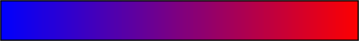

| # | Suburb | Lights | Speeding |
|---|---|---|---|
| 1 | Darlinghurst | 14,322 | 153,725 |
| 2 | Moore Park | 20,977 | 133,901 |
| 3 | Warhoonga | 0 | 93,997 |
| 4 | Ewingsdale | 0 | 70,597 |
| 5 | Sydney | 4,789 | 60,290 |
| 6 | Ryde | 4,188 | 54,428 |
| 7 | Rosebery | 0 | 56,966 |
| 8 | Lane Cove | 7,875 | 48,926 |
| 9 | Bankstown | 24,903 | 30,210 |
| 10 | Liverpool | 26,348 | 25,662 |
Suburbs are shaded to represent number of infringements. Red areas with the most and blue with the least.
Represent the location of safety cameras